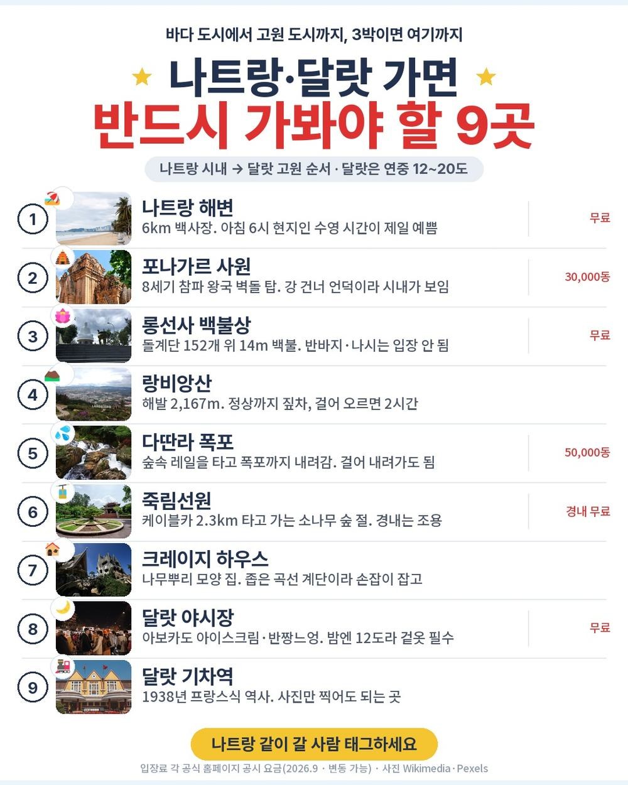
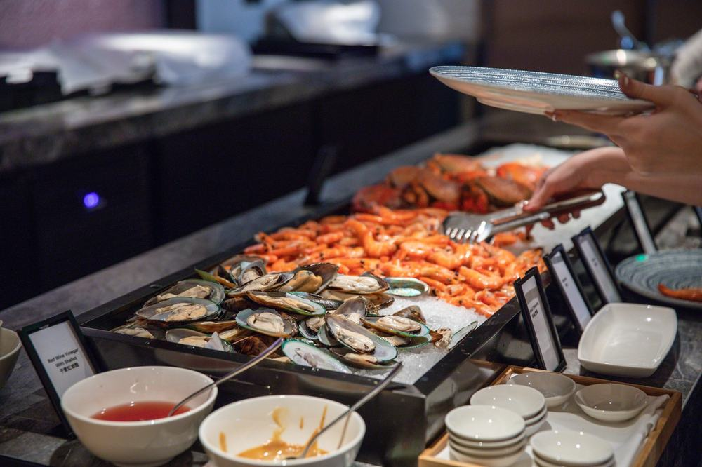
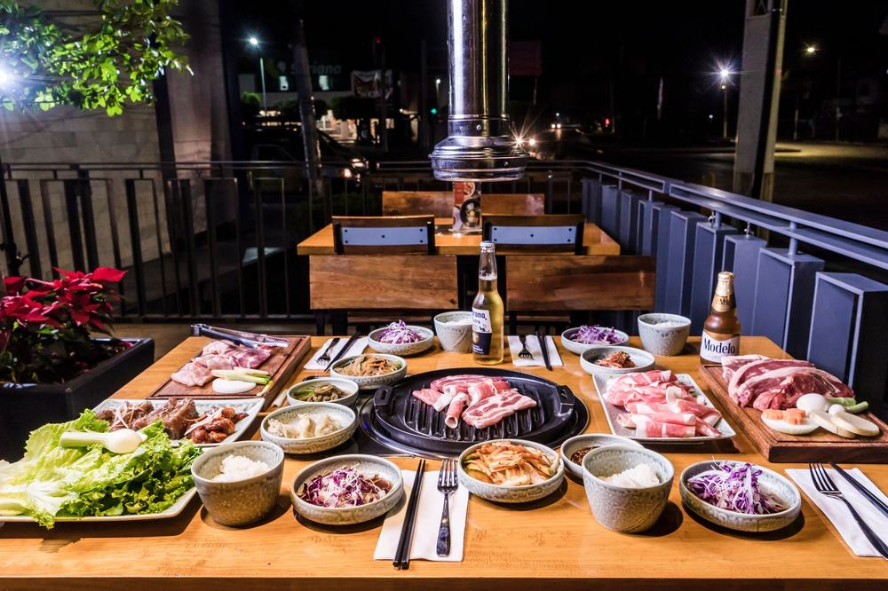
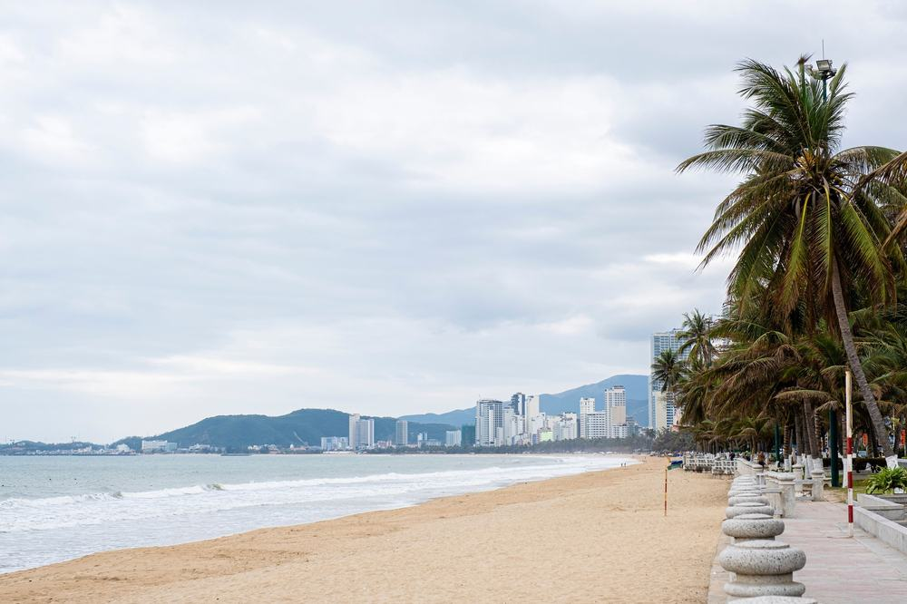
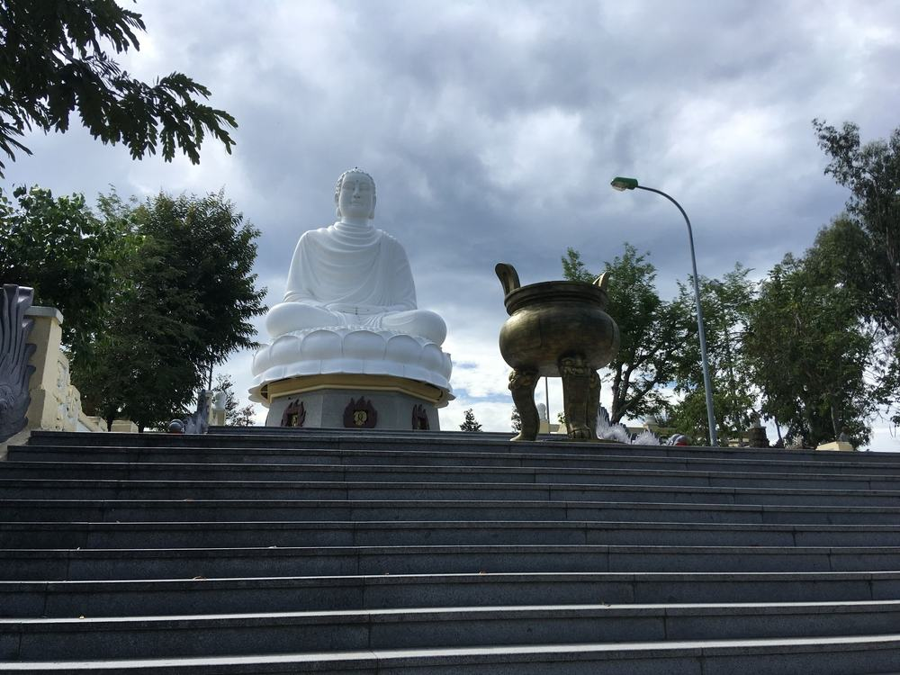
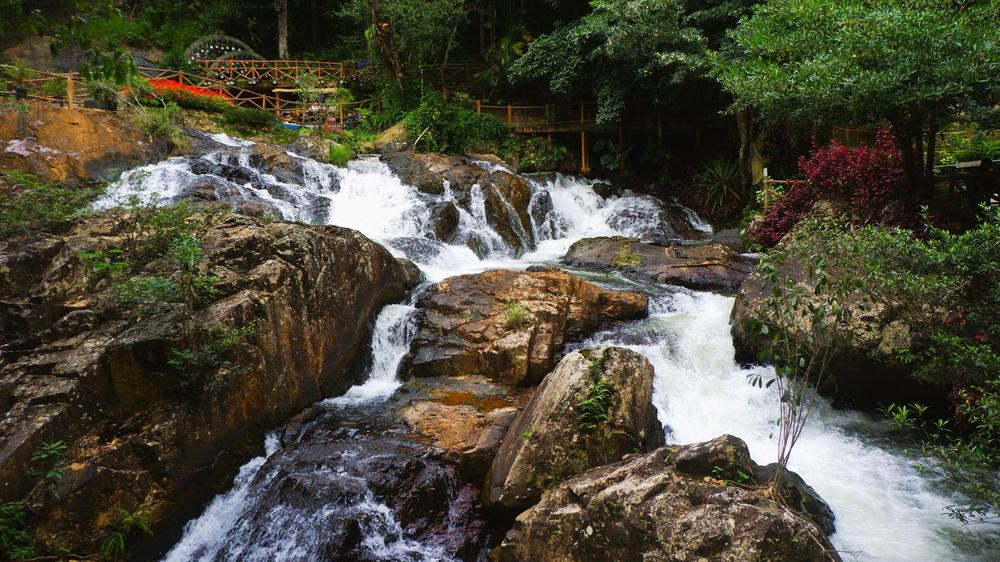
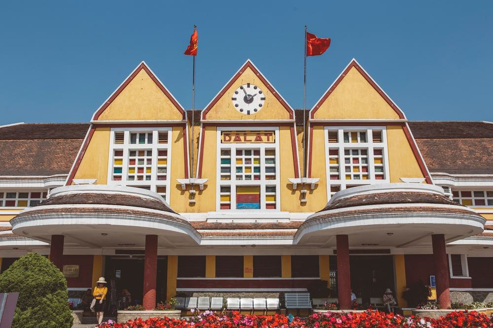
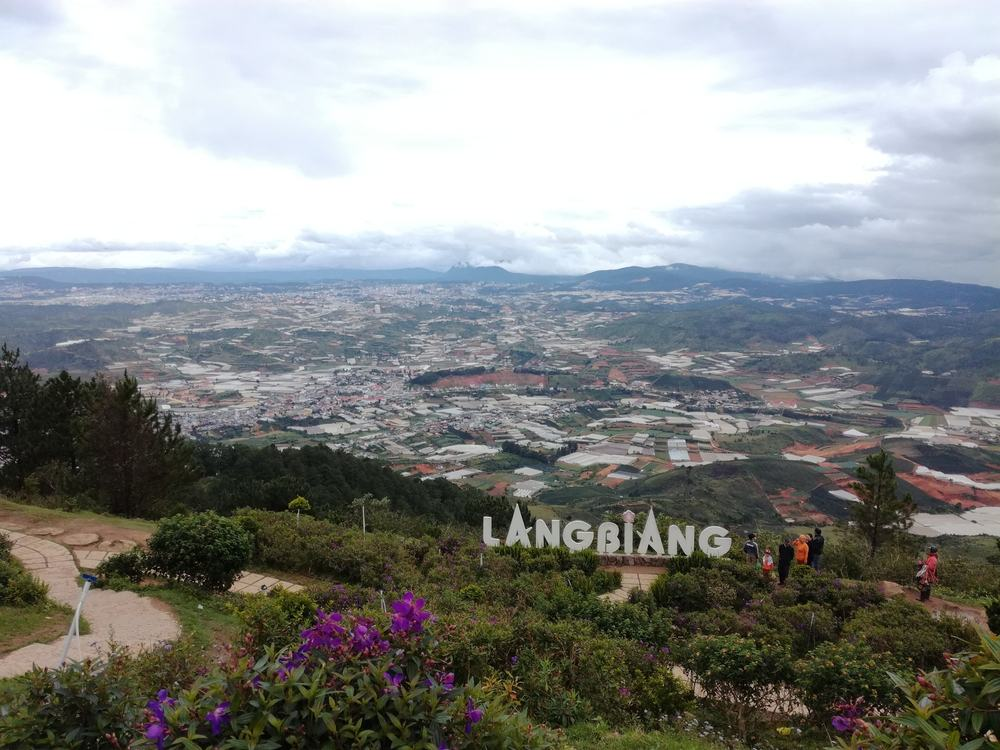

나트랑 달랏 패키지 가격 59만원, 5성 3박에 밥 9끼가 다 들어가는 이유 (참좋은여행 · 직항 · 노팁 노옵션 · 3박 5일)
결론 — 추천. 밥 걱정 없이, 현지에서 지갑 열 일 없이 5성 호텔에서 사흘 자고 오실 분에게 맞음. 밤 비행기가 힘든 분, 버스 3시간 30분을 두 번 못 타는 분은 고르면 안 됨.
부모님 가을 여행으로 베트남을 알아보다가 '노팁·노옵션'인데 5성 3박이 59만 9천원인 게 보여서 붙잡았음. 보통 이 값이면 4성이거나 선택관광이 서너 개 붙는데, 이건 마사지·짚차·레일바이크·케이블카까지 상품가 안임. 어디까지 들어 있고 현장에서 뭘 더 내는지 항목별로 뜯어봤음.

| 항목 | 내용 |
|---|---|
| 여행사 | 참좋은여행 |
| 가격 | 599,000원 (1인 · 성인 기준 · 10월 출발) |
| 일정 | 3박 5일 · 저녁 7시 출발 (밤 비행기 왕복) |
| 항공 | 트리니티항공(구 티웨이) 직항 5시간 30분 · 기내식 없음 |
| 숙소 | 5성 나트랑 1박(빈펄 비치프론트·멜리아 엠파이어·동급) + 달랏 2박(라달랏·멀펄·동급) |
| 가는 곳 | 롱선사 · 포나가르 · 담시장 · 랑비앙산 짚차 · 다딴라 레일바이크 · 죽림선원 케이블카 · 크레이지 하우스 · 달랏 야시장 · 달랏 기차역 · 침향탑 |
| 반드시 더 내는 돈 | 마사지 팁 US$5 (1인 · 아동 제외) |
결론부터 말하면 같은 동선을 직접 짜면 30만원 넘게 더 듦. 5성 3박과 마사지·짚차·케이블카를 따로 사면 그 값이 나오고, 나트랑에서 달랏 산길을 올라가는 버스는 자유여행으로는 예약이 번거로움.
| 순서 | 다루는 것 | 한 줄 결론 |
|---|---|---|
| 1 | 구성 뜯어보기 | 식사 9회 전부 · 선택관광 0 · 현지 필수는 마사지 팁 $5 하나 |
| 2 | 일정 살펴보기 | 첫날은 자는 것뿐, 2일차 나트랑 → 달랏, 3일차 달랏, 4일차 다시 나트랑 → 밤 비행기 |
| 3 | 자유여행 VS 패키지 | 직접 짜면 96만원, 패키지는 팁·기내식까지 62만원 |
1. 구성 뜯어보기
요약 — 항공·5성 3박·식사 9회·마사지 90분·짚차·레일바이크·케이블카·기사가이드 경비·보험까지 59만 9천원. 현지에서 반드시 내는 건 마사지 팁 $5 하나. 다만 쇼핑 3회와 밤 비행기, 버스 7시간이 있음.
1-1. 값에 뭐가 들었나
1인 59만 9천원임. 3박 5일 기준임.
| 항목 | 상태 |
|---|---|
| 왕복 항공권 | 포함 (직항 · 세금·유류할증 포함 · 기내식 없음) |
| 5성 호텔 3박 | 포함 (나트랑 1박 + 달랏 2박 · 2인 1실 · 조식 3회) |
| 식사 9회 | 포함 (자유식 0 · 한식 3회 · 현지식 3회 · 조식 3회) |
| 응온갤러리 씨푸드 뷔페 | 포함 (4일차 저녁 · 원문 '2024 미슐랭 선정' 표기) |
| 전신마사지 90분 | 포함 (팁 $5 별도) |
| 랑비앙 짚차 · 다딴라 레일바이크 · 죽림선원 케이블카 | 포함 (원문 상당액 $50 · $40 · $30) |
| 기사·가이드 경비 | 포함 ($50 상당) |
| 한국어 가이드 · 전용 버스 · 여행자보험 | 포함 |
| 마사지 팁 US$5 | 불포함 (1인 · 아동 제외) |
| 인솔자 | 불포함 항목 (한국어 가이드가 현지 전 일정) |
| 쇼핑 | 3회 (침향·커피·잡화 · 각 약 1시간 · 환불 불가) |
| 선택관광 | 없음 |
베트남 패키지는 기사·가이드 경비를 현지에서 걷는 게 보통인데 이 상품은 상품가 안임. 현지에서 반드시 내는 건 마사지 팁 $5뿐이라 1인 60만 6천원으로 보면 됨.
| 항목 | 금액 | 비고 |
|---|---|---|
| 마사지 팁 | US$5 (약 7천원) | 필수 · 아동 제외 |
| 기내식 | 약 1만원 | 왕복 밤 비행 · 공항에서 사 먹음 |
| 매너 팁 | 자율 | 호텔·식당 · 안 줘도 불이익 없음 |
| 음료·주류 | 끼니당 1천~3천원 | 식사에 나오는 음료 외 |
| 합계 (필수만) | 약 7천원 | 기내식까지 약 1만 7천원 |

1-2. 5성 호텔 세 밤, 두 도시
첫 밤은 나트랑 빈펄 비치프론트 또는 멜리아 엠파이어 또는 동급임. 둘 다 해변 바로 앞 고층 호텔. 밤 10시 반에 도착해 자정쯤 체크인하고, 2일차 오전이 자유시간이라 수영장·조식을 누릴 시간이 있음.
달랏 두 밤은 라달랏 또는 멀펄 또는 동급. 해발 1,500m라 연중 12~20도, 에어컨이 필요 없는 도시임. 같은 호텔에서 두 밤이라 짐을 한 번만 풀면 됨.
어디서 확인하나 — 상품 페이지 「숙박」 칸과 상단 특전 문구에 호텔 이름이 적혀 있는지 봄. 이 상품은 '또는 동급'이 붙어 있어 확정이 아님. 5성이라는 등급과 2인 1실·조식은 정해져 있음.

1-3. 식사 아홉 끼, 자유식 0
2·3일차 조식·현지식·한식, 4일차 조식·한식·응온갤러리 씨푸드 뷔페. 한식이 세 번(삼겹살 무제한 포함), 현지식이 분짜·반세오 정식 등. 1일차와 5일차는 밤 비행이라 식사가 없고, 기내식도 없음.
어디서 확인하나 — 일정표 각 날 식사 칸에서 '자유식' 글자를 셈. 이 상품은 0회. 「불포함」에 '기내식 불포함'이 적혀 있으니 공항에서 한 끼는 사 먹는다고 봄.

1-4. 체험 4개가 상품가 안, 선택관광은 0
전신마사지 90분(2일차), 랑비앙산 짚차 투어·다딴라 레일바이크·죽림선원 케이블카(3일차). 원문에 상당액이 $40·$50·$40·$30으로 적혀 있음. 보통 다른 상품에서 선택관광으로 파는 것들임. 쇼핑은 4일차 오전에 침향·커피·잡화 세 곳, 각 약 1시간.
어디서 확인하나 — 「선택관광」 칸이 비어 있는지 봄. 「쇼핑」 칸의 매장 수·시간·환불 표시를 봄. 마사지 줄 옆에 '팁 별도 $5'가 적혀 있는지도.
출발일별 요금 확인하기
https://naver.me/GGGDmh8p
| 질문 | 답 |
|---|---|
| Q. 쇼핑 없나요? | 3회 있음. 4일차 오전 침향·커피·잡화, 각 약 1시간. 구매는 자유 |
| Q. 가이드 경비는 따로 내나요? | 안 냄. 기사·가이드 경비($50 상당)가 상품가에 포함임 |
| Q. 출발확정인가요? | 아님. 최소 6명이 모여야 출발함. 예약 후 담당자 전화에서 확인 |
2. 일정 살펴보기
요약 — 1일차 밤 10시 반 도착. 2일차 오전 자유 → 마사지 → 롱선사·포나가르·담시장 → 달랏 3시간 30분. 3일차 랑비앙 짚차 → 다딴라 레일바이크 → 죽림선원 케이블카 → 크레이지 하우스 → 야시장. 4일차 쇼핑·기차역 → 나트랑 3시간 30분 → 침향탑 → 씨푸드 뷔페 → 밤 11시 반 비행기. 버스는 약 11시간.
| 일차 | 가는 곳 | 식사 | 숙소 |
|---|---|---|---|
| DAY 1 | 인천 19:00 출발 → 나트랑 22:30 | — | 5성 (나트랑) |
| DAY 2 | 오전 자유 · 마사지 90분 · 롱선사 · 포나가르 · 담시장 · 달랏 이동 3시간 30분 | 조식 · 현지식 · 한식 | 5성 (달랏) |
| DAY 3 | 랑비앙 짚차 · 다딴라 레일바이크 · 죽림선원 케이블카 · 크레이지 하우스 · 달랏 야시장 | 조식 · 현지식 · 한식 | 5성 (달랏) |
| DAY 4 | 쇼핑 3곳 · 달랏 기차역 · 나트랑 이동 3시간 30분 · 침향탑 · 씨푸드 뷔페 · 야시장 · 23:30 출발 | 조식 · 한식 · 뷔페 | — (기내) |
| DAY 5 | 인천 06:45 도착 | — | — |

2-1. 첫날은 자는 게 전부
저녁 7시에 인천에서 떠서 밤 10시 반에 내림. 공항 안에서는 현지인 가이드가 먼저 맞고 한국어 가이드는 공항 밖에서 합류함(베트남 규정). 호텔 체크인이 자정 무렵. 대신 첫날 낮을 한국에서 다 쓰고 나오는 거라 휴가를 하루 덜 써도 됨.
2-2. 둘째 날 — 나트랑 반나절, 그리고 달랏으로
11시 미팅 전까지 자유시간. 그다음 코코넛 커피 → 전신마사지 90분 → 롱선사(돌계단 152개, 14m 백불) → 포나가르 사원(8세기 참파 벽돌 탑) → 담시장. 오후에 달랏으로 3시간 30분 산길을 올라감. 저녁은 한식.
롱선사 계단이 이 일정에서 제일 많이 걷는 구간임. 무릎이 불편하면 아래에서 보고 쉬어도 됨.
어디서 확인하나 — 일정표 2일차에 '전신마사지 90분(팁 별도 $5)'이 적혀 있는지, 달랏 이동 시간이 적혀 있는지 봄. 마사지가 '선택관광' 칸에 있으면 그건 다른 상품임.

2-3. 셋째 날 — 달랏 하루가 이 상품의 핵심
랑비앙산은 짚차로 정상 전망대까지 올라감(걸으면 2시간). 다딴라 폭포는 숲속 레일바이크로 내려감. 죽림선원은 2.3km 케이블카. 크레이지 하우스는 나무뿌리 모양 집인데 계단이 좁고 굽어서 손잡이를 잡아야 함. 저녁 한식 뒤 달랏 야시장(아보카도 아이스크림). 걷는 건 야시장과 크레이지 하우스 정도.

| 일차 | 구간 | 시간 |
|---|---|---|
| DAY 1 | 공항 → 호텔 | 약 40분 |
| DAY 2 | 나트랑 시내 → 달랏 | 약 4시간 30분 (시내 1시간 + 이동 3시간 30분) |
| DAY 3 | 달랏 안 | 약 1시간 30분 |
| DAY 4 | 달랏 → 나트랑 → 공항 | 약 4시간 30분 |
| 합계 | 약 11시간 |
2-4. 넷째 날 — 다시 나트랑, 씨푸드 뷔페, 밤 비행기
체크아웃 뒤 쇼핑 세 곳(침향·커피·잡화), 달랏 기차역 외관을 보고 나트랑으로 3시간 30분. 점심 한식, 침향탑 포토타임, 사탕수수 주스, 저녁 응온갤러리 씨푸드 뷔페, 야시장 30분, 공항. 밤 11시 반 출발, 인천 새벽 6시 45분. 이날은 호텔이 없음.
어디서 확인하나 — 일정표 4일차 숙박 칸이 비어 있는지(기내) 봄. 마지막 날 호텔이 없는 대신 저녁까지 관광이 있음.

| 질문 | 답 |
|---|---|
| Q. 많이 걷나요? | 롱선사 계단 152개가 최대. 나머지는 짚차·레일바이크·케이블카·버스 |
| Q. 10월에 덥나요? | 나트랑은 27~30도에 비가 잦아짐. 달랏은 12~20도라 겉옷 필요 |
| Q. 호텔은 어디인가요? | 5성 후보군(나트랑 빈펄 비치프론트·멜리아 엠파이어, 달랏 라달랏·멀펄) 또는 동급. 확정은 아님 |
3. 자유여행 VS 패키지
요약 — 같은 동선을 직접 짜면 1인 96만원쯤 나오고, 패키지는 팁·기내식을 더해 62만원임. 패키지가 34만원쯤 쌈. 5성 3박과 체험 4개를 따로 사면 그 값이고, 나트랑↔달랏 산길 이동은 자유여행이면 리무진 버스를 따로 예약해야 함.
같은 동선을 직접 짜면 얼마인지 계산해봤음. 패키지에 들어 있는데 자유여행이면 따로 내야 하는 돈까지 전부 넣었음. 환율은 1달러 = 1,400원, 10,000동 = 560원으로 잡았음. 대부분 추정치라 근거 열에 적어 뒀음.
| 항목 | 자유여행 | 패키지 | 근거 |
|---|---|---|---|
| 왕복 항공 | 약 30만원 | 포함 | 인천-나트랑 LCC 10월 왕복 25~35만원대 (항공권 비교 사이트 월별 조회 · 추정) |
| 5성 호텔 3박 | 약 24만원 | 포함 | 나트랑 해변 5성 2인 1실 1박 20만원 + 달랏 5성 1박 14만원 × 2 ÷ 2 (추정) |
| 식사 9끼 | 약 12만원 | 포함 | 한 끼 1만원 + 씨푸드 뷔페 4만원 (추정) |
| 체험 4개 | 약 22만원 | 포함 | 마사지 90분 $40 + 짚차 $50 + 레일바이크 $40 + 케이블카 $30 (원문 상당액) |
| 도시 간 교통 | 약 5만원 | 포함 | 나트랑↔달랏 리무진 버스 왕복 + 시내 이동 (추정) |
| 입장료 | 약 1만원 | 포함 | 포나가르 30,000동 + 다딴라 50,000동 + 롱선사 무료 |
| 공항 ↔ 시내 | 약 1만원 | 포함 | 캠란 공항-나트랑 시내 택시 왕복 (추정) |
| 여행자보험 | 약 1만원 | 포함 | 3박 5일 기준 |
| 가이드·인솔자 | 없음 | 한국어 가이드 · 경비 포함 | 패키지는 $50 상당이 상품가 안 |
| 합계 | 약 96만원 | 59만 9천원 + 팁 7천원 + 기내식 1만원 = 약 62만원 | 쇼핑 제외 |
숫자만 보면 패키지가 34만원쯤 쌈. 5성 3박과 체험 4개가 자유여행으로는 제일 큰 항목이고, 그걸 상품가 안에 넣은 것임.
그리고 표에 못 넣은 게 있음. 밤 10시 반에 내려서 호텔까지 데려다주는 사람이 있다는 것. 자유여행이면 그 시간에 택시를 잡아야 함. 나트랑↔달랏 산길도 버스 한 대가 이어 줌.

어디서 확인하나 — 자유여행으로 갈 거면 나트랑-달랏 리무진 버스(약 3시간 30분)와 달랏 5성 호텔 값을 먼저 봄. 그 둘을 더해 보면 패키지와 비교가 됨.
| 자유여행이 맞는 사람 | 패키지가 맞는 사람 |
|---|---|
| 나트랑 해변에서만 쉴 것임 | 바다와 고원을 한 번에 볼 것임 |
| 낮 비행기가 꼭 필요함 | 밤 비행기로 휴가를 아끼고 싶음 |
| 쇼핑 매장 방문 자체가 싫음 | 이동·식사는 맡기고 앉아만 있고 싶음 |
| 베트남을 두 번 이상 가봤음 | 부모님을 보내드림 |
| 질문 | 답 |
|---|---|
| Q. 환전은 얼마나 하나요? | 마사지 팁 $5 + 개인 비용. 1인 5만원어치 동이면 넉넉함 |
| Q. 혼자 가면 얼마 붙나요? | 싱글룸 사용료 30만원이 전 일정 기준으로 붙음 |
| Q. 비자 필요한가요? | 한국 여권은 45일 무비자. 여권 유효기간 6개월 이상 |
4. 정리
59만 9천원에 직항, 5성 3박, 식사 9회 전부, 마사지 90분, 짚차·레일바이크·케이블카, 씨푸드 뷔페, 기사·가이드 경비까지 들어 있고 선택관광이 없음. 현지에서 반드시 내는 건 마사지 팁 $5 하나임.
같은 동선을 직접 짜면 96만원이 나와서 패키지가 34만원쯤 쌈. 값보다 더 큰 건 밤에 내려서 자정에 체크인하는 첫날과 산길 두 번을 버스 한 대가 다 이어 준다는 것임.
걸리는 건 밤 비행기 왕복, 버스 3시간 30분 × 2, 쇼핑 3회, 최소 6명 이 넷임. 전부 상품 흠이 아니라 맞는 사람을 가르는 조건임. 밤 비행기가 힘들면 낮 출발 상품을 보면 되고, 밥·팁·옵션 걱정 없이 5성에서 자고 오는 게 목적이면 이 구성이 맞음.
출발일별 요금 확인하기
https://naver.me/GGGDmh8p
같은 기준으로 나트랑 패키지 고르는 법만 따로 정리한 글도 있음 — https://blog.naver.com/robotnady10/224417117514
함께 보면 좋은 글
노랑풍선 후쿠오카 69만원, 힐튼 하루에 온천 료칸 하루가 되는 이유
https://blog.naver.com/robotnady10/224415894031
모두투어 타이베이 65만원, 부산 출발에 101 전망대까지 되는 이유
https://blog.naver.com/robotnady10/224415235888
이 글에는 제휴 링크가 포함되어 있으며, 링크를 통해 예약 시 일정 수수료를 받습니다. 가격은 동일합니다. 이 글은 10월 출발 기준이며, 출발일에 따라 가격이 달라집니다.
사진 출처: nt_nhatrang_beach_1 — Pexels / nt_long_son_buddha_1 — Wikimedia Commons / nt_datanla_falls_1 — Pexels / nt_dalat_station_1 — Pexels / nt_langbiang_1 — Wikimedia Commons